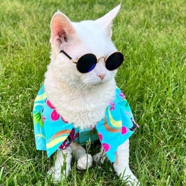
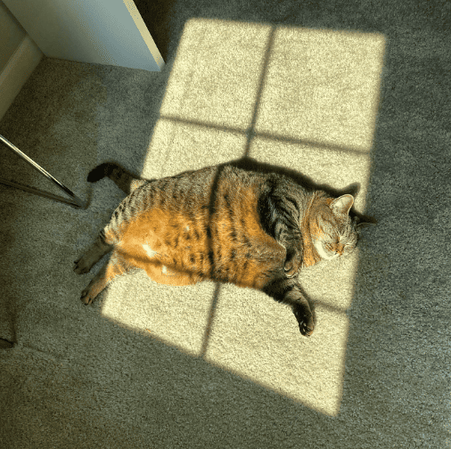
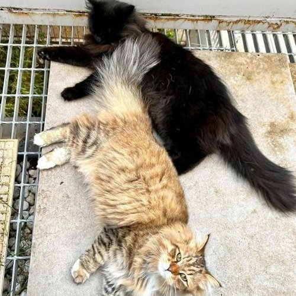
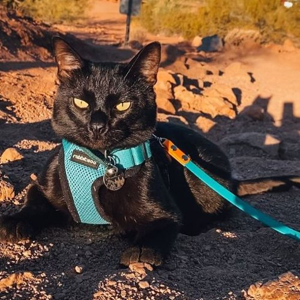
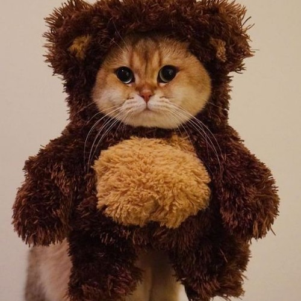

fashion
Stephanie is pawrent to 7 disabled cats and she's out on a mission - to prove that all cats deserve love. More than 4k people on Instagram seem to be supporting her agenda. They actively engage with her posts and have made her one of the most sought-after cat influencers on the platform.
travel
Step into the world of feline royalty with @louis_the_kitten_prince, where the enchanting Louis reigns supreme. His owner, Yi-Hsien Chiang, curates this regal cat's Instagram kingdom, and scrolling through Louis' page, you'll quickly see that this kitty thrives on pampering and adoration.

lounging
Meet Attica Shirley, the sassy tabby cat with a personality as big as her fluffy, oh-so-adorable appearance! This cat is not just your typical feline friend; she's a social media sensation in the making, determined to conquer your Instagram feed one charming pose at a time.
lounging
Are you a fan of Siberian cats? Meet our next catfluencer, best known for the #SiberianCatsofInstagram hashtag. These cats are living a great life and people love seeing them living like royalty.


travel
Most pet cats are known to be homebodies with little to no interest in the outdoors, but not Aries. She has proven to be a rockstar and is famously known on Instagram as The Adventure Cat. You will see her do a variety of things including hiking and showing unique talents.
travel
If you search the web for top cat influencers, you will find that most have unique properties such as Batman The Munchkin Cat- the cat with short legs. What might sound like a shortcoming to some has proven to be Batman's main asset.
fashion
Maple is a British Shorthair with 620k followers. He earned fame for wearing aww-worthy costumes and is now working with some big names including Petco and Darwins Pet Food.
